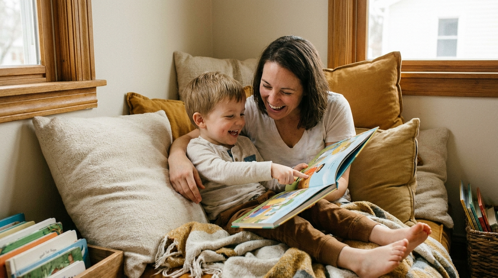

How to Read Books With Your Child at Every Age (Infant to 5)
By Leslie Dykstra · Certified Early Childhood Specialist · Williamson County, TN

One of my favorite things to tell parents is that a child is "reading" long before they can read a single word. Sharing books looks different at every age, and each stage builds on the one before it. Here's how to interact with books as your child grows — and how to make each moment count.
Infants: learning that books are special
At this stage, it's all about the book as an object. Help your baby learn to hold the book, point to the pictures, and turn the pages (even if it's three at a time!). Name what you see. "Look, a puppy! A soft, brown puppy." You're teaching them that this special thing in their hands is full of wonderful pictures and words.
Toddlers: finding things on the page
Toddlers love a treasure hunt, so turn the page into one. Locating items is a great way to practice early skills — different shapes, colors, and places. "Can you find the red ball? Where is the moon?" Every time they point, they're connecting a word to a picture, which is exactly what we want.
Twos: learning to "picture read"
This is one of the most magical stages. Your two-year-old can start picture reading — telling the story from the pictures. Ask, "According to this picture, what do you think is happening on this page?" That's STEM imagination at work! You can take it further with pretend toys (a homemade puppet from a paper bag works beautifully) and act out a scene from the book together.
Ages 3 to 4: letters and the parts of a book
As your child learns their alphabet letters, invite them to hunt for those letters right there on the page, alongside their picture reading. This is also a lovely time to teach the parts of a book: the spine, the pages, the front cover, the back cover. Talk about the characters in the story — who they are, what they want, how they feel. This vocabulary sinks in earlier than most parents expect. (If you'd like the letter order that works best, here's what order to teach phonics.)
Ages 4 to 5: from letters to real reading
Now the pieces start clicking together. At this stage your child can:
- Find and read sight words they're learning.
- Locate the main character and make predictions — "What do you think happens next?"
- Understand that we read from left to right, top to bottom.
- Once they've mastered letter names and sounds, begin to decode words by sounding out the phonemes.
- Compare and contrast characters, and hunt for rhyming words.
And my very favorite move at every one of these ages: bring the book to life and act it out! Use silly voices, stand up and stomp like the giant, whisper like the mouse. A story your child performs is a story they truly understand.
The one rule that ties it all together
Wherever your child is, follow their joy. If they want to linger on one page, linger. If they want the same book for the hundredth time, read it — repetition is how little ones master a story. The goal isn't to finish the book. It's to leave your child feeling that books are warm, fun, and theirs — a cozy reading nook of their own goes a long way toward that feeling. Want more on this? Here's how to read aloud in a way that builds real readers.
Frequently asked questions
My infant just wants to chew the book. Is that okay?
Absolutely. For a baby, chewing, holding, and turning the pages is reading. They're learning that a book is a special object you hold a certain way. Board books and cloth books are made for exactly this stage, so hand one over and let them explore.
My child has the book memorized. Are they actually reading?
Memorizing a favorite book is a wonderful, normal step — it means they love the story and understand how books work. It isn't the same as decoding words yet, but it's a healthy stop on the way there. Here's more on what to do when your child memorizes books but can't read the words.
How long should reading time be with a young child?
As long as your child stays interested, and no longer. For a busy toddler that might be two minutes and one board book; for a preschooler it might be three stories in a row. Short and joyful beats long and forced every time. The goal is for books to feel like a treat. For the quantity side of the question, here's how many books to read to your child.
Want to see your child thrive?
If you'd like to talk about where your child is and what would help them most, book a free 15-minute consultation with Leslie. Little Minds, Big Futures — where every child's potential takes flight.